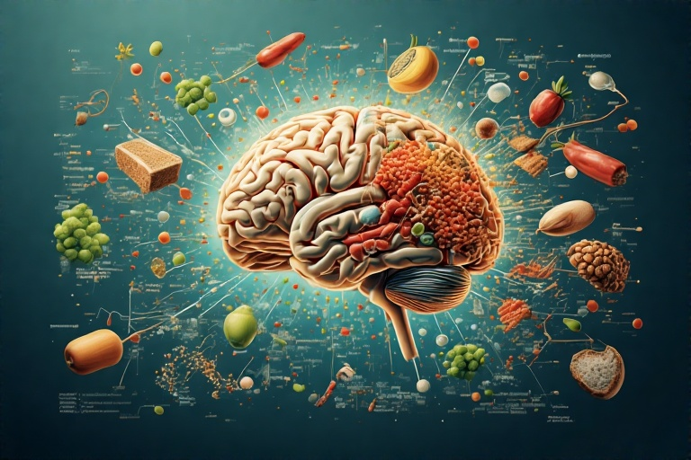
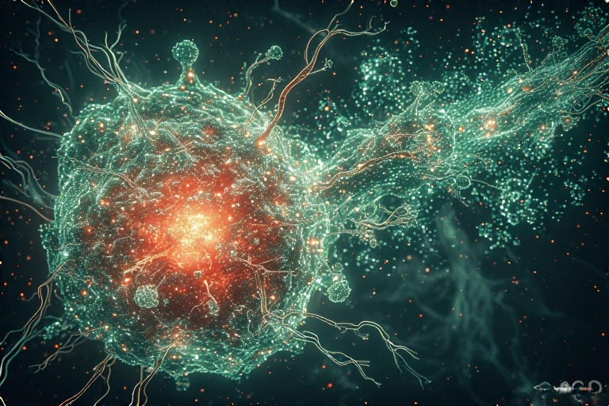
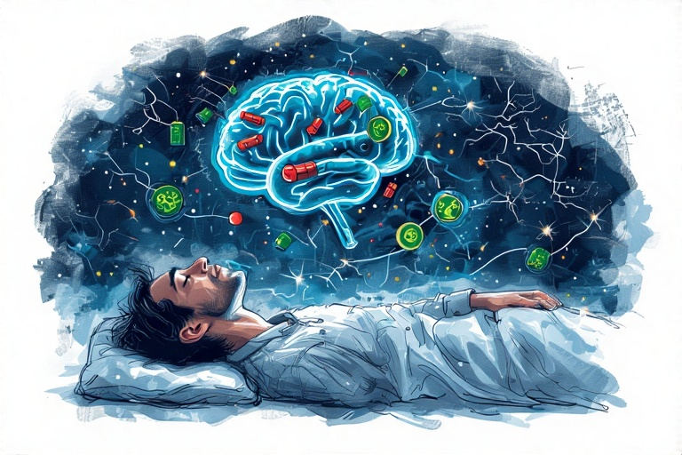
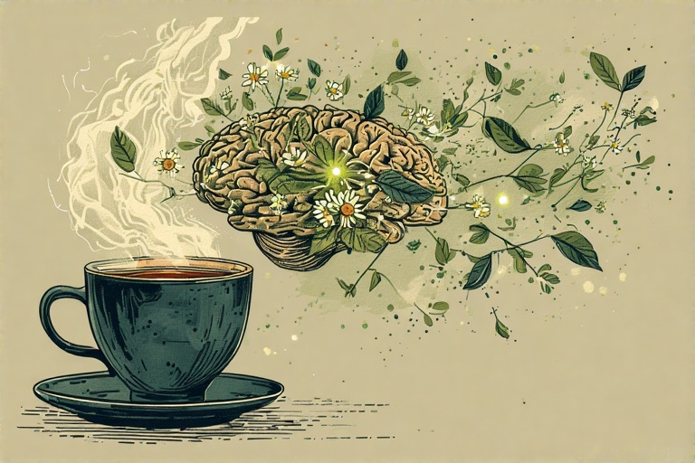
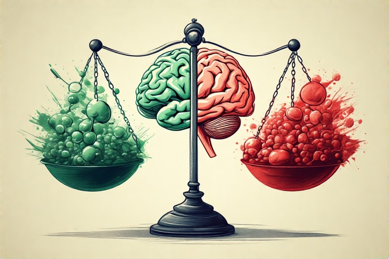
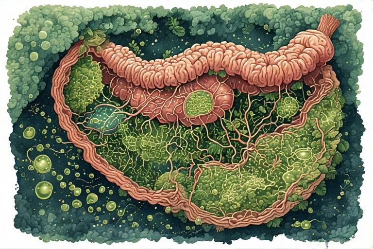
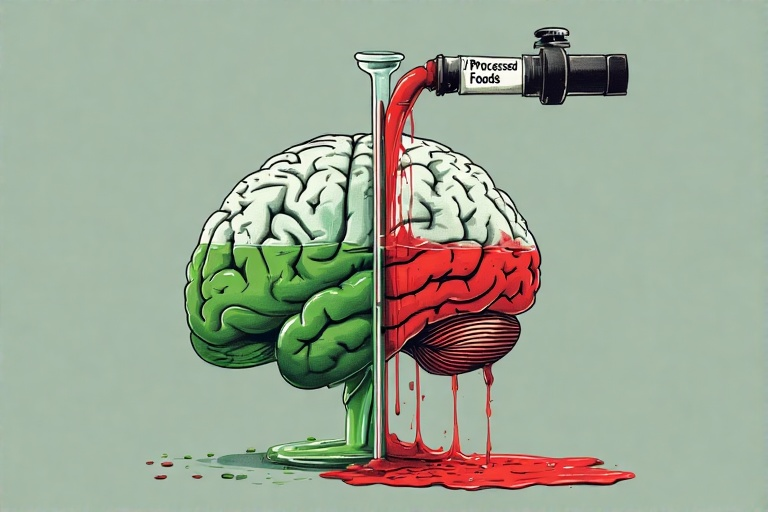

Te simți constant "pe sârmă", cu mintea într-o cursă continuă de gânduri de la care nu te poți deconecta? Ai o senzație de tensiune în umeri și maxilar, iar somnul este agitat și neodihnitor? Această stare de hipervigilență și incapacitate de a te relaxa poate fi un semn al unui deficit de GABA, "frâna" naturală a creierului tău.
Dacă dopamina este acceleratorul, serotonina este regulatorul de viteză, iar oxitocina este GPS-ul social, atunci GABA (acidul gama-aminobutiric) este pedala de frână a sistemului nervos. Este principalul neurotransmițător inhibitor din creier, având rolul esențial de a reduce excitabilitatea neuronală. Într-un creier sănătos, există un echilibru delicat între semnalele excitatorii (precum cele mediate de glutamat) și cele inhibitorii. GABA asigură că activitatea cerebrală nu devine haotică, permițând calmul, concentrarea și relaxarea.
Producția de GABA este un proces biochimic elegant care ilustrează perfect principiul echilibrului. GABA este sintetizat direct din glutamat, principalul neurotransmițător excitator al creierului. Această conversie este realizată de o enzimă numită glutamat decarboxilază (GAD), care are nevoie de un co-factor esențial: forma activă a vitaminei B6 (piridoxal-5'-fosfat). Astfel, creierul are un mecanism ingenios de a-și crea propria "frână" din "accelerator", menținând homeostazia. Când acest proces este eficient, creierul poate comuta lin între stări de alertă și stări de calm.
Pentru ca acest proces de sinteză să aibă loc, corpul are nevoie de o aprovizionare constantă cu precursori din alimentație. Principalul precursor este aminoacidul glutamină, care se găsește din abundență în alimente bogate în proteine, precum carnea, peștele, ouăle și lactatele, dar și în surse vegetale ca spanacul și varza. Vitamina B6, co-factorul esențial, este crucială pentru activarea enzimei GAD; fără ea, conversia glutamatului în GABA este ineficientă. Aceasta se găsește în năut, banane, cartofi și carne de pasăre. În plus, minerale precum magneziul și zincul joacă roluri de susținere, ajutând la funcționarea optimă a receptorilor GABA și la calmarea generală a sistemului nervos.
Carența de GABA este adesea rezultatul unui stil de viață modern. Stresul cronic este principalul vinovat, deoarece epuizează rezervele de magneziu și vitamina B6, esențiale pentru producția de GABA. O dietă procesată, săracă în nutrienți, poate duce la un aport insuficient de precursori. De asemenea, un dezechilibru al florei intestinale (disbioză) poate afecta producția de GABA la nivel intestinal, care, deși nu ajunge direct la creier, influențează sistemul nervos prin axa intestin-creier. Factorii genetici pot juca și ei un rol, predispunând anumite persoane la o activitate mai redusă a enzimei GAD.
Pe de altă parte, un exces de activitate GABAergică este rar întâlnit în mod natural și este aproape întotdeauna rezultatul unor factori externi. Consumul de alcool și utilizarea medicamentelor anxiolitice (precum benzodiazepinele) stimulează artificial receptorii GABA, inducând o stare de relaxare forțată. Problema este că, în timp, creierul se adaptează la această stimulare externă și își reduce propria producție de GABA și sensibilitatea receptorilor. Acest fenomen duce la toleranță (nevoia de doze mai mari pentru același efect) și la simptome severe de sevraj (anxietate extremă, insomnie) la întreruperea substanței, deoarece sistemul natural de "frânare" este compromis.
Iată 8 pași practici pentru a-ți susține natural sistemul GABAergic:
Pasul 1: Hrănește-ți precursorii
Pentru a produce GABA, creierul are nevoie de materie primă. Principalul precursor este glutamina, un aminoacid abundent care este convertit în glutamat și apoi în GABA. Asigură-te că dieta ta include surse bogate de glutamină, precum carnea de vită, pui, pește, ouă, lactate, varză, spanac și sfeclă. De asemenea, vitamina B6 este un co-factor indispensabil pentru enzima care realizează această conversie. Surse excelente de B6 includ năutul, ficatul, tonul, somonul și bananele.
O dietă echilibrată, care furnizează constant acești nutrienți, este fundamentală pentru a menține o producție optimă de GABA. Nu este vorba de a consuma cantități uriașe, ci de a avea o prezență constantă a acestor "cărămizi" în alimentația zilnică. O masă care combină o sursă de proteine cu legume verzi și o sursă de carbohidrați complecși oferă un pachet complet pentru susținerea acestui proces biochimic vital pentru starea ta de calm și relaxare.
Pasul 2: Integrează magneziul
Magneziul este "mineralul relaxării" și un aliat puternic al sistemului GABAergic. Acesta acționează în mai multe moduri: se leagă direct de receptorii GABA și îi activează, mimând și amplificând efectul calmant al GABA. În plus, magneziul ajută la reglarea eliberării de neurotransmițători excitatori, precum glutamatul, prevenind astfel suprastimularea. Deficitul de magneziu, foarte comun în populația modernă, este direct legat de simptome precum anxietate, iritabilitate și crampe musculare.
Include în dieta ta alimente bogate în magneziu, cum ar fi legumele cu frunze verzi (spanac, kale), semințele de dovleac și de floarea-soarelui, migdalele, avocado și ciocolata neagră. O baie caldă cu sare Epsom (sulfat de magneziu) este o altă modalitate excelentă de a crește nivelul de magneziu prin absorbție transdermică și de a induce o stare de relaxare profundă înainte de culcare. Suplimentarea poate fi, de asemenea, o opțiune, în special sub formă de glicinat de magneziu.
Pasul 3: Practică yoga și respirația profundă
Anumite forme de mișcare și practici de relaxare pot crește în mod direct nivelul de GABA din creier. Studiile au arătat că o singură sesiune de yoga poate crește nivelul de GABA cu până la 27%. Combinația de posturi fizice (asane), controlul respirației (pranayama) și meditație are un efect puternic de calmare asupra sistemului nervos, reducând activitatea simpatică ("luptă sau fugă") și activând-o pe cea parasimpatică ("odihnă și digestie").
Respirația lentă și diafragmatică este o altă tehnică extrem de eficientă. Atunci când respiri rar și adânc (de exemplu, 4 secunde inspiri, 6-8 secunde expiri), trimiți un semnal puternic către creier prin nervul vag că ești în siguranță. Acest lucru stimulează eliberarea de GABA și reduce activitatea amigdalei, centrul fricii. Poți practica aceste exerciții de respirație oriunde și oricând simți că anxietatea începe să crească.
Pasul 4: Prioritizează somnul profund
Relația dintre GABA și somn este bidirecțională și fundamentală. GABA este esențial pentru a iniția și menține somnul, calmând activitatea cerebrală și permițând creierului să treacă în stadiile de somn profund. În același timp, somnul de calitate, în special somnul cu unde lente (deep sleep), este perioada în care creierul se reface și își reechilibrează sistemele de neurotransmițători, inclusiv receptorii GABA.
Privarea de somn duce la o scădere a funcționalității receptorilor GABA, făcându-te mai vulnerabil la stres și anxietate a doua zi, ceea ce, la rândul său, face adormirea și mai dificilă. Pentru a rupe acest cerc vicios, creează o rutină de somn strictă. Evită ecranele și lumina puternică cu cel puțin o oră înainte de culcare, menține dormitorul răcoros și întunecat și încearcă să te culci și să te trezești la aceleași ore.
Pasul 5: Explorează ceaiurile și plantele calmante
Natura oferă numeroase plante care pot susține sistemul GABAergic. Ceaiul verde conține L-teanină, un aminoacid care poate crește nivelul de GABA și poate induce o stare de "calm alert". Valeriana, mușețelul și roinița (lemon balm) sunt alte plante recunoscute pentru proprietățile lor sedative și anxiolitice. Acestea conțin compuși care fie se leagă de receptorii GABA, fie inhibă enzima care descompune GABA în creier, prelungindu-i astfel efectul calmant.
Integrarea unui ceai calmant în rutina ta de seară poate fi un ritual puternic care semnalează corpului și minții că este timpul să se relaxeze. Aceste plante nu sunt la fel de puternice ca medicamentele de sinteză și acționează într-un mod mai blând, susținând procesele naturale ale corpului. Este important, totuși, să discuți cu un medic înainte de a folosi suplimente concentrate, mai ales dacă urmezi deja un tratament medicamentos.
Pasul 6: Redu consumul de stimulenți
Stimulenții precum cofeina acționează în opoziție directă cu GABA. Cofeina blochează receptorii de adenozină, un alt neurotransmițător inhibitor, ceea ce duce la o creștere a excitabilității neuronale. Acest efect anulează practic o parte din munca pe care GABA încearcă să o facă. Un consum ridicat de cofeină, mai ales în a doua parte a zilei, poate contribui la stări de agitație, anxietate și poate perturba serios arhitectura somnului.
Încearcă să limitezi consumul de cafea la o cană dimineața sau să o înlocuiești cu alternative cu un conținut mai scăzut de cofeină, precum ceaiul verde (care conține și L-teanină pentru a contrabalansa efectele). Fii atent și la sursele ascunse de stimulenți, precum băuturile energizante sau anumite medicamente. Reducerea aportului de stimulenți va permite sistemului tău GABAergic să funcționeze mai eficient, fără a fi nevoie să lupte constant împotriva unui val de excitație artificială.
Pasul 7: Susține sănătatea intestinală
Axa intestin-creier este din ce în ce mai recunoscută pentru rolul său în sănătatea mentală. Anumite tulpini de bacterii benefice din intestin, în special cele din genurile Lactobacillus și Bifidobacterium, pot produce GABA direct în tractul gastrointestinal. Deși acest GABA nu poate traversa bariera hemato-encefalică, el poate influența creierul prin intermediul nervului vag, contribuind la reducerea anxietății și la îmbunătățirea stării de spirit.
Pentru a susține aceste bacterii producătoare de GABA, consumă alimente fermentate precum iaurtul, kefirul, kimchi și varza murată. Acestea acționează ca probiotice, introducând bacterii benefice în sistemul tău. De asemenea, hrănește-le cu prebiotice (fibre pe care doar ele le pot digera), pe care le găsești în ceapă, usturoi, sparanghel și banane. Un intestin sănătos contribuie la un sistem nervos calm.
Pasul 8: Limitează expunerea la glutamat
Deoarece GABA este produs din glutamat, menținerea unui echilibru între cei doi este crucială. O supraîncărcare cu glutamat excitator poate copleși capacitatea sistemului de a-l converti în GABA, ducând la hiperexcitabilitate. O sursă externă majoră de glutamat este glutamatul monosodic (MSG), un potențiator de aromă folosit pe scară largă în alimentele procesate, supe la plic, mezeluri și mâncarea de la restaurantele asiatice.
Deși MSG este considerat sigur pentru majoritatea populației, persoanele sensibile sau cele cu un sistem GABAergic deja compromis pot experimenta simptome precum dureri de cap, agitație sau anxietate după consum. Încearcă să citești etichetele și să optezi pentru alimente cât mai puțin procesate. Gătind acasă cu ingrediente proaspete, ai control total asupra a ceea ce consumi și poți evita supraîncărcarea sistemului tău cu semnale excitatorii inutile.